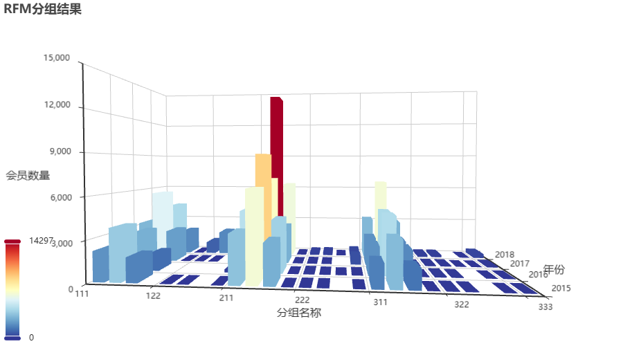

电商公司RFM分析案例：背景与业务场景设定
1. 公司概况与业务背景
公司名称：优品生活（假设电商平台）
主营业务：日用品、家居用品、个人护理产品的在线销售
成立时间：5年
会员规模：约200万注册用户，其中活跃用户约50万
业务特点：
- 产品以日常消耗品为主，用户复购需求强
- 客单价相对稳定，平均约280-320元
- 用户生命周期价值较高，但竞争激烈，用户流失率也较高
2. 业务痛点与RFM应用目标
2.1 当前面临的挑战
- 营销成本逐年上升：获客成本从3年前的80元/人增长到现在的150元/人
- 用户分层不清晰：对所有用户采用相同的营销策略，导致高价值客户体验不足，低价值客户维护成本过高
- 复购率提升困难：虽然有较强的复购属性，但缺乏精准的复购预测和激活策略
- 用户流失严重：每月自然流失率约3%，缺乏有效的流失预警和挽回机制
2.2 RFM模型应用目标
通过引入RFM会员价值度模型，我们希望实现：
- 精准识别用户价值：将用户分为8-10个价值层级
- 差异化营销策略：针对不同价值群体制定个性化营销方案
- 提升用户生命周期价值：通过精准运营延长高价值用户生命周期
- 优化营销资源分配：将80%的营销资源投入到20%的高价值用户上
3. 关键业务指标定义
3.1 R（最近一次消费）维度定义
基于业务特点，我们定义以下关键时间节点：
| 时间区间 | 业务含义 | 分值建议 | 运营含义 |
|---|---|---|---|
| 0-7天 | 活跃用户 | 5分 | 刚完成购买，处于消费热情期 |
| 8-30天 | 正常用户 | 4分 | 处于正常复购周期内 |
| 31-60天 | 预警用户 | 3分 | 超过正常复购周期，需要关注 |
| 61-90天 | 沉睡用户 | 2分 | 处于沉睡边缘，需要激活 |
| 90天以上 | 流失用户 | 1分 | 已流失，需要召回策略 |
业务依据：
- 日用品平均复购周期为30天
- 新用户首单后7天内完成复购的概率是30天后的2倍
- 超过90天未购买的用户，再次购买的概率低于5%
3.2 F（消费频率）维度定义
基于历史购买行为分析：
| 购买次数 | 用户类型 | 分值建议 | 运营含义 |
|---|---|---|---|
| 1次 | 新客/尝鲜客 | 1分 | 完成首购，需要转化为复购用户 |
| 2-3次 | 成长用户 | 2分 | 初步建立信任，需要培养消费习惯 |
| 4-10次 | 忠诚用户 | 3分 | 已形成购买习惯，价值较高 |
| 11-20次 | 核心用户 | 4分 | 平台依赖度高，需要重点维护 |
| 20次以上 | 超级用户 | 5分 | 品牌忠实粉丝，可发展为KOC |
业务依据：
- 购买3次以上的用户，年留存率高达75%
- 购买10次以上的用户，平均生命周期价值是普通用户的8倍
- 平台80%的销售额来自购买4次以上的用户
3.3 M（消费金额）维度定义
基于客单价和商品价格分布：
| 消费金额区间 | 用户价值 | 分值建议 | 运营含义 |
|---|---|---|---|
| 0-200元 | 低价值用户 | 1分 | 客单价低于平均水平，可能只购买促销品 |
| 201-450元 | 中等价值用户 | 2分 | 接近平均客单价，有提升潜力 |
| 451-800元 | 高价值用户 | 3分 | 高于平均客单价，购买力较强 |
| 801-1500元 | 超高价值用户 | 4分 | 单次或累计消费高，可能是礼品采购或囤货 |
| 1500元以上 | 战略价值用户 | 5分 | 企业采购或深度用户，需个性化服务 |
业务依据：
- 平台平均客单价为300元
- 热销单品价格集中在80-240元区间
- 会员专享套装价格为450-800元
- 企业采购或礼品订单通常超过1500元
4. 数据源与计算逻辑
4.1 数据源表结构
- 创建数据库
1 | create database if not exists rfm_db; |
- 创建数据库表名称
1 | rfm_table |
4.2 计算周期与时间窗口
- 分析基准日：每月最后一天（生成月度RFM报告）
- 时间窗口：
- R值：计算到分析基准日的天数
- F值：过去12个月内的购买次数
- M值：过去12个月内的累计消费金额
5. RFM分群与业务策略对应关系
5.1 8个典型用户群体定义
重要价值客户（555）
- 特征：最近购买、购买频次高、消费金额高
- 占比：约5%
- 业务策略：提供VIP专属服务、提前预售权、高价值礼品
重要发展客户（515）
- 特征：最近购买、购买频次低、消费金额高
- 占比：约8%
- 业务策略：培养复购习惯，推荐高频次商品
重要保持客户（155）
- 特征：很久未买、购买频次高、消费金额高
- 占比：约7%
- 业务策略：激活召回，调查流失原因
重要挽留客户（115）
- 特征：很久未买、购买频次低、消费金额高
- 占比：约3%
- 业务策略：高成本挽回，大额优惠券
一般价值客户（551）
- 特征：最近购买、购买频次高、消费金额低
- 占比：约15%
- 业务策略：提升客单价，推荐高价商品
一般发展客户（511）
- 特征：最近购买、购买频次低、消费金额低
- 占比：约25%
- 业务策略：新客培养，建立消费习惯
一般保持客户（151）
- 特征：很久未买、购买频次高、消费金额低
- 占比：约12%
- 业务策略：低成本激活，小额优惠券
一般挽留客户（111）
- 特征：很久未买、购买频次低、消费金额低
- 占比：约25%
- 业务策略：降低服务成本，考虑放弃
6. 预期业务效果
通过实施RFM模型，我们预期实现以下业务提升：
- 营销ROI提升：精准营销使营销成本降低30%，转化率提升25%
- 用户留存率提升：高价值用户留存率从65%提升到85%
- 用户生命周期价值提升：平均用户LTV提升40%
- 复购率提升：整体复购率从35%提升到50%
7. 实施计划与时间表
- 第1-2周：数据准备与清洗
- 第3-4周：RFM算法开发与测试
- 第5-6周：分群策略制定与验证
- 第7-8周：营销策略对接与A/B测试
- 第9-12周：全面上线与效果监控
接下来，您可以基于这个业务背景和技术框架，开始编写具体的代码实现。建议从数据提取和清洗开始，逐步构建完整的RFM分析系统。
8. 具体代码实现及效果展示
以下代码请在jupyter环境中运行，并严格按顺序执行
8.1 导包及环境准备【若没有相应的python包，请先安装包再执行】
1 | # 导包 |
8.2 加载数据
1 | # 1.1 定义列表，记录Excel表名 |
1 | # 1.3 查看 sheet_dict变量的数据类型 |
1 | # 1.7 查看字典中每个df对象(即:每张sheet表)的 基本信息和 统计信息. |
8.3 数据预处理
1 | # 需要处理的动作，1.删除缺失值.2.过滤出金额>1的订单.3.固定时间节点，以每年的最后1天作为当年的分析节点. |
1 | # 6.把上述的四张表(对应的4个df对象)，合并成一个df对象. |
1 | # 7. 为了好区分，给df对象新增 year列 |
1 | # 8. 给表新增1列，date_interval 表示本订单购买时间距 统计节点时间的差值 并转换成int类型 |
8.4 数据的统计分析
1 | # 1. 基于year和会员ID分组，统计:RFM三项的基本数据. |
1 | # 3. 分别查看下 r , f , m 的统计信息/分布情况 |
1 | # 4. 划分区间，分别给出:RFM的评分，依据:P:最近一次购买时间越小分越高，f:购买次数越大分越高，m:购买金额 越大分越高。 |
1 | # 思路3: 基于我们手动指定区间范围，给出每个范围的 评分(三分法，低中高) |
1 | # 完整写法 |
1 | # 5. 统计每个会员的RFM评分. 采用方案--> 拼接(将数据给到营销人员去做分析，所以使用拼接) |
1 | # 如果是喂给模型。我们则需要将三列的值分别相加得到评分 |
8.5 导出结果
- 将数据导出到sales_score.xlsx文件中
1 | # 1. 导出结果到Excel文件中，忽略索引. |
- 将数据导出到mysqI数据库中
1 | # 1. 导出结果到mysql数据库中 |
8.6 数据可视化
1 | # 1. 准备可视化的数据：即:rfm_group(分组结果评分),year(统计年份),number(评分个数) |
1 | # 3. 绘制可视化 |
9. 3D图表展示

至此我们的RFM会员评估模型案例结束
将得到的数据发送给公司业务人员/营销人员使用即可
通过最后的3D图表可以很直观的观察到每一年中会员用户的数据情况